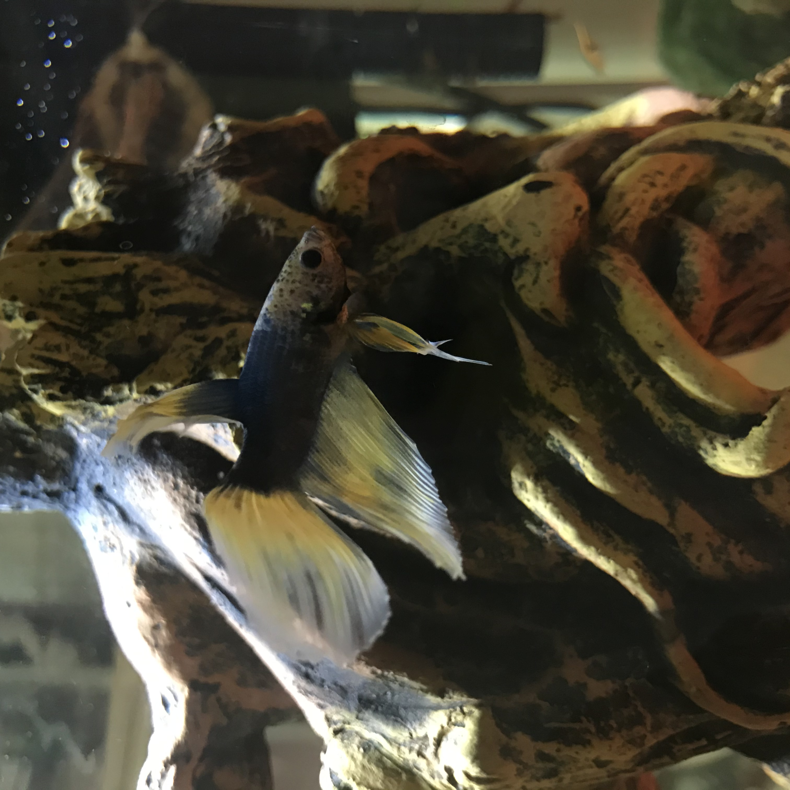
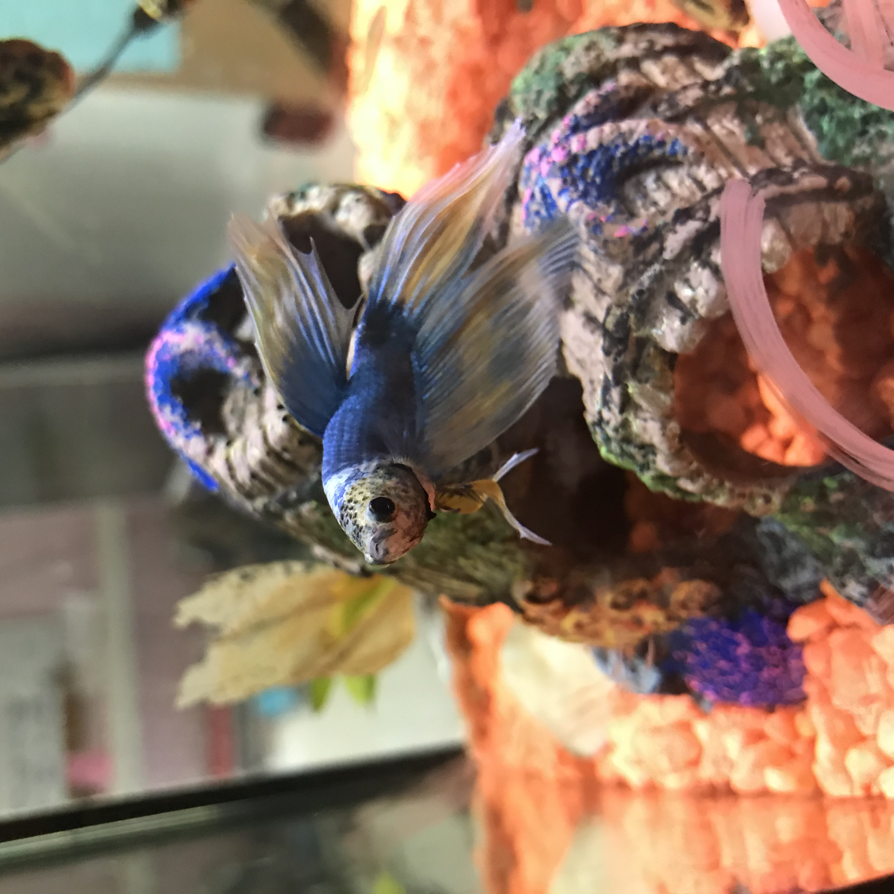

My Betta Blog!
Here, I will be posting pics, articles, and betta tips! Stay tuned!
4/7/21
My first blog entry! I'm so glad to be here and that I can experience this betta adventure with all of you! Recently, my
loyal betta fish Sushi has died. he lived a happy life, but turns out he had an early stage of uncurable dropsy when
I adopted the little fella 😭. He was a turquise/red male rosetail and was the prettiest betta you've ever laid your
eyes upon. When he passed away, his tank felt so empty without a little blue figure zipping around. So I adopted Cedric! He seemed
to be very young and small (I had to break apart his pellets for him to eat!), but I knew that if I didn't adopt him,
no one would. You see, he is a light yellow/dark blue spadetail that just seemed to not suit him. I also happened
to know that I loved him. His full name is Cedric Diggory Jr., named after the HP character Cedric Diggory, who
I believe is an underated character. Plus, Cedric is mainly yellow and shows the characteristics of a Hufflepuff!
All right, that's enough of my blabbing for today! See ya next time!


Cedric the betta! 4/7/21